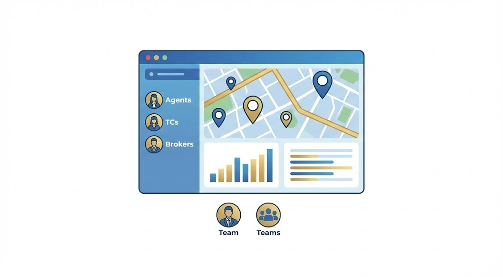

Hidden Gems: Emerging Neighborhoods in South Jakarta for High-Yield Investment

Perkembangan infrastruktur MRT mengubah peta investasi properti di Jakarta Selatan.
Bagi sebagian besar orang, properti di Jakarta Selatan identik dengan Pondok Indah, Kemang, atau Kebayoran Baru. Area-area tersebut memang prestisius, namun harganya sudah sangat jenuh (*mature*), menyisakan ruang apresiasi modal (*capital gain*) yang relatif sempit bagi investor baru.
Investor cerdas kini mulai melirik area "lapis kedua" atau *emerging neighborhoods*. Kawasan ini menawarkan keseimbangan antara aksesibilitas yang membaik, fasilitas gaya hidup yang berkembang pesat, dan harga tanah yang masih masuk akal (undervalued). Berikut adalah analisis mendalam kami tentang permata tersembunyi di Selatan Jakarta.
1. Cipete: The New Creative Hub
Dulunya dikenal sebagai area perumahan tua yang tenang, Cipete telah bertransformasi menjadi pusat gaya hidup kreatif. Kehadiran stasiun MRT Cipete Raya menjadi katalis utama perubahan ini.
Jalan Cipete Raya kini dipadati oleh *coffee shop* artisan, butik lokal, dan restoran berkonsep unik. Bagi investor, properti di sini sangat menarik untuk diubah menjadi *boutique hotel*, *co-living space*, atau disewakan kepada ekspatriat muda yang menginginkan suasana "kampung modern" dengan akses transportasi publik yang mudah.
Infrastruktur dan Konektivitas
Akses langsung ke MRT Jalur Utara-Selatan berarti penghuni bisa mencapai Bundaran HI dalam waktu kurang dari 30 menit, bebas macet. Ini adalah nilai jual utama yang tidak dimiliki oleh area Kemang.
2. Lebak Bulus & Pondok Labu
Terletak di ujung selatan, Lebak Bulus kini menjadi gerbang utama mobilitas warga Jakarta. Sebagai stasiun akhir MRT dan titik pertemuan dengan Tol JORR, kawasan ini berkembang menjadi area Transit Oriented Development (TOD) yang masif.
Harga tanah di Pondok Labu, yang berbatasan langsung dengan Lebak Bulus, masih relatif lebih rendah dibandingkan Cilandak, namun menawarkan akses fasilitas yang sama. Area ini sangat cocok untuk pengembangan *townhouse* kelas menengah-atas yang menyasar keluarga milenial.
"Membeli properti bukan tentang di mana keramaian berada hari ini, tapi di mana infrastruktur akan membawa keramaian itu esok hari."
Perkembangan komersial di Cipete mendorong kenaikan harga residensial di sekitarnya.
3. Jagakarsa & Ciganjur: The Green Sanctuary
Bagi mereka yang mencari kualitas udara lebih baik dan ruang hijau yang luas, Jagakarsa adalah jawabannya. Kawasan ini ditetapkan sebagai daerah resapan air, sehingga koefisien dasar bangunan (KDB) lebih rendah, menjamin lingkungan yang tidak terlalu padat.
Akses Tol Desari (Depok-Antasari) telah membuka isolasi kawasan ini. Jagakarsa kini menjadi primadona bagi pencari rumah tapak (*landed house*) dengan halaman luas namun tetap memiliki akses cepat ke pusat bisnis TB Simatupang.
Target Pasar
Area ini sangat diminati oleh keluarga muda yang mengutamakan kesehatan dan lingkungan asri untuk tumbuh kembang anak, namun tidak ingin tinggal terlalu jauh di pinggiran kota seperti Depok atau Bogor.
Ingin Data Harga Tanah Terbaru?
Dapatkan laporan riset pasar eksklusif untuk area Cipete, Lebak Bulus, dan Jagakarsa.
Chat Tim Riset KamiKesimpulan
Jakarta Selatan tidak pernah kehabisan pesona. Pergeseran infrastruktur transportasi massal seperti MRT dan LRT telah mendefinisikan ulang peta "kawasan premium". Cipete menawarkan gaya hidup urban, Lebak Bulus menawarkan konektivitas, dan Jagakarsa menawarkan ketenangan.
Sebagai investor, kuncinya adalah masuk sebelum area ini mencapai puncak kematangannya. Saat ini adalah waktu yang tepat untuk mengakuisisi aset di kawasan-kawasan berkembang ini.
FAQ: Investasi Area Jakarta Selatan
Diana Wijaya, M.Sc
Head of Market Research di Star Estate Land. Pengamat tata kota dan perkembangan properti urban.